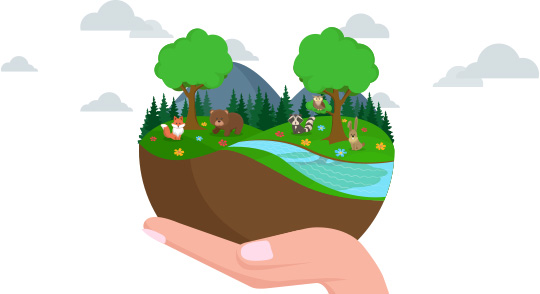

La fórmula del agua es H2O, dos átomos de hidrógeno y uno de oxígeno.
El 70% del agua en el mundo se destina para regar cultivos agrícolas,
es decir para producir alimentos, como por ejemplo el trigo, que es la
base del pan y las harinas (galletitas y pastas). En Argentina se utiliza
el 75% del agua para agricultura, el 9% para destino industrial y el 16% para
abastecimiento, de acuerdo con datos de la FAO.
¿Cómo cuidar el medio ambiente?
Más de 7,000 millones de personas habitamos
este hermoso Planeta Tierra, que se nos brinda con todos
los recursos para que podamos vivir plenamente. Sin embargo,
todavía nos falta tomar conciencia de la importancia del cuidado
del medio ambiente. Recientemente, el Banco Mundial publicó un
informe donde advierte que se necesitan acciones serias para
evitar que aumente la temperatura del planeta en 4 grados
centígrados antes de fin de en siglo. ¿Qué podemos hacer cada
uno de nosotros y como familias para cuidar el medio ambiente?
En Alun-Co estamos comprometidos con la vida sustentable, por eso
queremos contarte cómo valorar aún más nuestro ecosistema.
Información sobre el medio ambiente
Consejos para cuidar el medio ambiente

Cuidar y plantar más árboles. Uno de los grandes problemas es la
tala indiscriminada de árboles en el mundo y estos queridos
entrañables habitantes de veredas, parques, plazas y otros múltiples
espacios son indispensables para la vida porque aportan oxígeno y absorben
dióxido de carbono.
Plantar plantas en casa. Es Ideal plantar especies autóctonas porque estarán
mejor adaptadas al lugar. En el Instituto Nacional de Desarrollo Agropecuario
(INTA) te pueden orientar sobre el tema.
Crear una huerta orgánica en casa. En Alun-Co dictamos talleres a formadores
como maestros, juntas vecinales y particulares.
Reciclaje y limpieza. No arrojar papeles ni residuos en los espacios públicos.
Arrojar la basura en los contenedores y seguir las normas de reciclado y separación
de residuos. En lo posible, usar productos ecológicos.